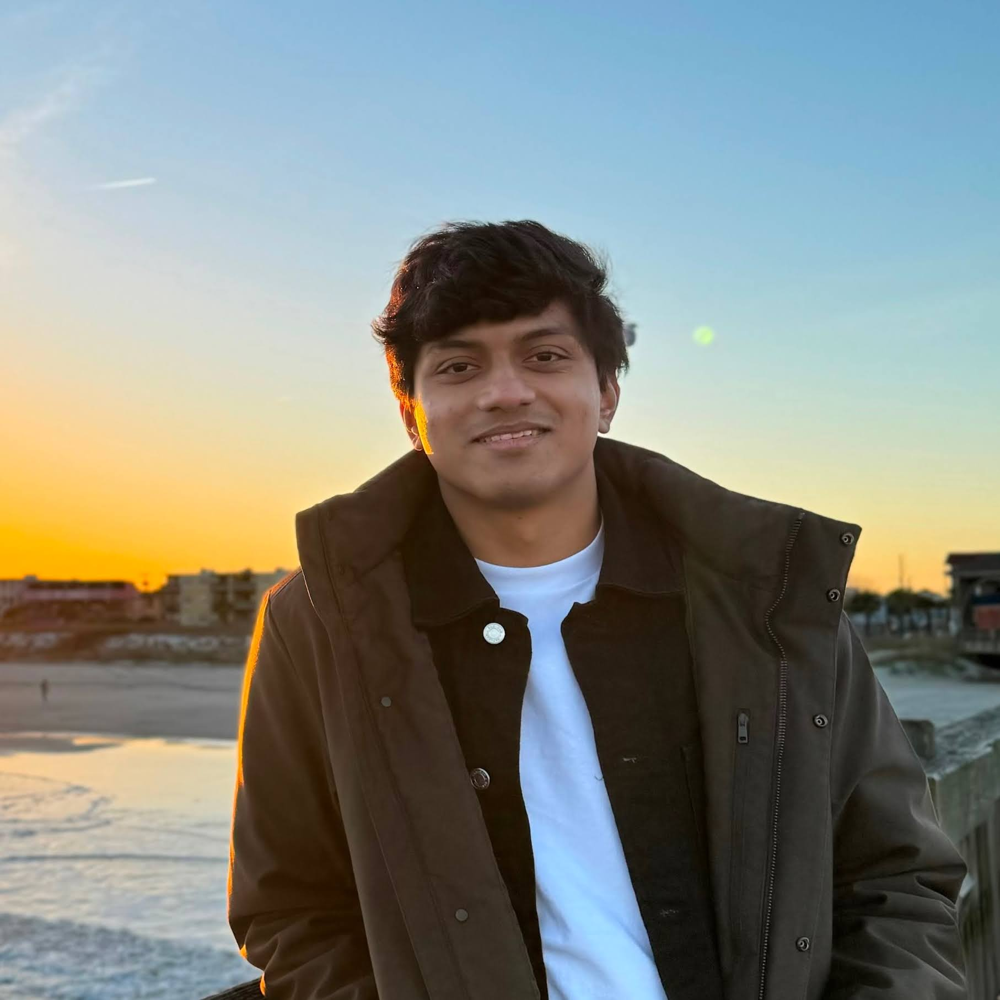
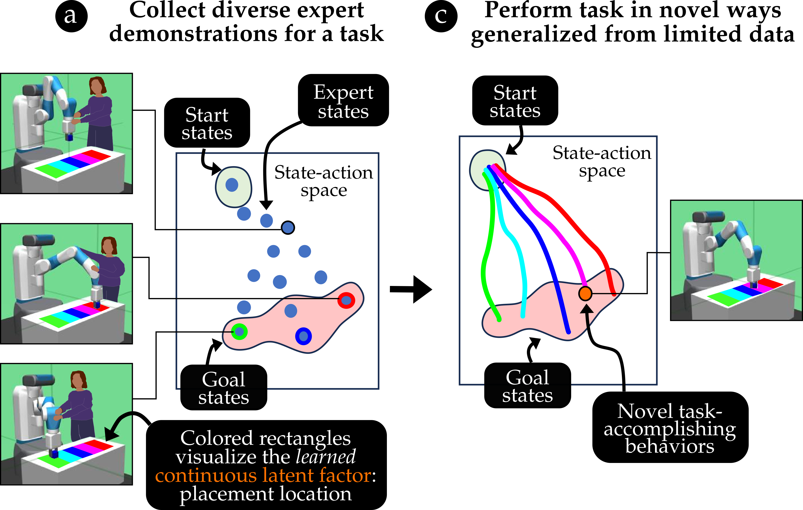
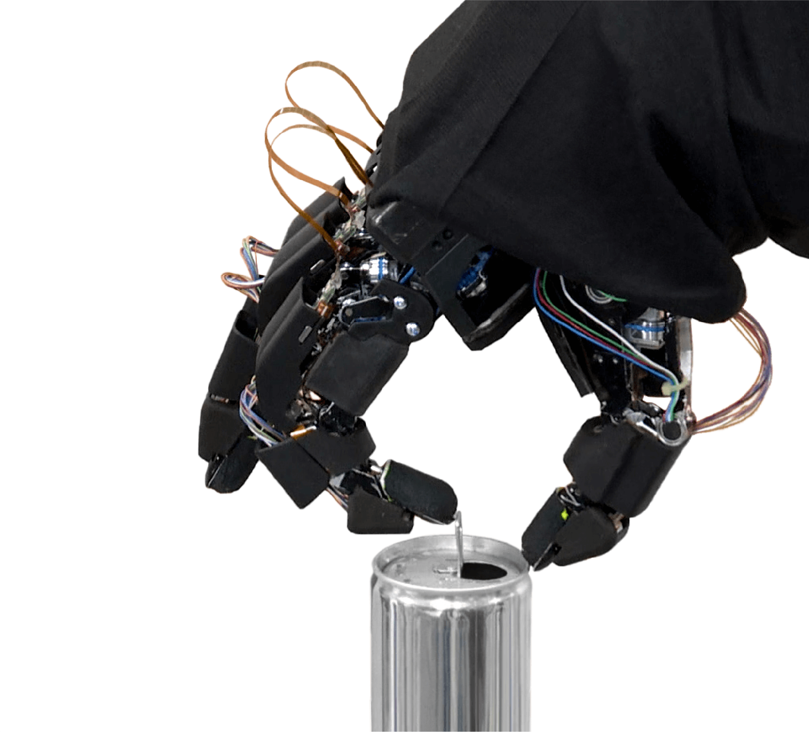

PhD Student in Robotics
Georgia Institute of Technology
Atlanta, US
Email: vsreeramdass@gatech.edu
Hi! I'm a Robotics PhD student at Georgia Tech, advised by Prof. Matthew Gombolay and Prof. Aaron Young, and supported by the IRIM Robotics PhD Fellowship from the Institute for Robotics and Intelligent Machines.
My research focuses on agile human-robot collaboration: robot control informed by a partner's motion, toward robots that work alongside people. I study this on two platforms, a robotic wheelchair tennis partner and adaptive exoskeletons, combining hierarchical reinforcement learning, generative modeling and sim-to-real transfer.
Before my PhD, I did my Masters in Computer Science at Georgia Tech, specializing in Computational Perception and Robotics, where I worked on learning generalizable behaviors from diverse demonstrations. Earlier, I spent three years as a Research Engineer at Honda R&D (Frontier Robotics) in Tokyo, working on reinforcement learning for dexterous manipulation. I did my undergraduate studies in Computer Science and Engineering at IIT Bombay, advised by Prof. Sunita Sarawagi and Prof. Soumen Chakrabarti, and interned at Honda Research Institute Japan.
I am seeking internships for summer 2027.
Links: [CV] [Google Scholar] [GitHub] [LinkedIn]
Playing tennis alongside a person requires a robot partner that is both agile, reacting to fast-moving balls within fractions of a second, and robust, staying reliable over long rallies. This project designs hierarchical reinforcement learning policies for tennis that decouple the racket swing from ball placement, so that each level can be learned and reused independently.
Policies trained in Isaac Lab transfer zero-shot to a real robot arm, sustaining a juggling rally of 140 consecutive real-world ball strikes, ended only by a 2-minute trial cap. Transfer is stabilized by a Gaussian-process model of the racket's spatially varying restitution (manuscript in preparation). Ongoing work evaluates preliminary human-robot teaming through collaborative juggling with data-driven proxy teammates.
Exoskeletons differ widely in the sensors they carry, which makes controllers hard to share across devices. This project designs a time-series diffusion model over onboard sensors, joint states, and biological and assistance torques. Diffusion-based imputation lets the model condition on any available subset of signals and generate the rest, enabling a single model across devices with differing sensor suites, as well as inference-time steering of assistance.
To meet real-time constraints, sensor-to-torque mappings are distilled from the diffusion model into single-pass models, targeting onboard control on NVIDIA Jetsons.
Previously (Aug 2024 – Dec 2025), this project explored task-agnostic exoskeleton control using transformer and diffusion models conditioned on long-horizon motion context. Variational inference was used to disentangle task-specific and subject-specific factors toward personalized assistance, and training was scaled with simulated sensor data through unpaired sim-to-real translation (CycleGANs, Schrödinger bridges).

Diverse behavior policies are valuable in domains requiring quick test-time adaptation or personalized human-robot interaction. Human demonstrations provide rich information regarding task objectives and factors that govern individual behavior variations, which can be used to characterize useful diversity and learn diverse performant policies. However, we show that prior work that builds naive representations of demonstration heterogeneity fails in generating successful novel behaviors that generalize over behavior factors. We propose Guided Strategy Discovery (GSD), which introduces a novel diversity formulation based on a learned task-relevance measure that prioritizes behaviors exploring modeled latent factors. We empirically validate across three continuous control benchmarks for generalizing to in-distribution (interpolation) and out-of-distribution (extrapolation) factors that GSD outperforms baselines in novel behavior discovery by ~21%. Finally, we demonstrate that GSD can generalize striking behaviors for table tennis in a virtual testbed while leveraging human demonstrations collected in the real world.

Learning dexterous manipulation directly on real robots from scratch is considerably difficult due to the extensive real-robot deployment it requires, and sim-to-real is not straightforward due to limited simulation fidelity. This project investigated demonstration-based, offline, and residual reinforcement learning to make learning feasible for reorientation and manipulation of articulated objects on a multi-fingered robot hand.
For reorientation of objects for tool use (transitions among precision, tripod and power grasps), data-driven RL algorithms (DAPG, AWAC) learned from expert and suboptimal demonstrations; offline RL with online finetuning on the real robot achieved robustness to ±4cm and ±30° of noise in the initial object pose.
For opening a beverage can, a task requiring precise contacts and high torques, the project explored structured policies in two forms: (1) parameterized motion primitives as low-level policies, with gating policies operating in goal and duration spaces, and (2) residual policies that provide adjustments to actions from scripted base controllers. While parameterized primitives accelerated learning in simulation, they were limited in scenarios requiring quick, reactive behaviors. Residual policies showed significant improvements in sample efficiency and robustness, and transferred sim-to-real with robustness to 3mm of object initialization noise, demonstrated at IROS '22.